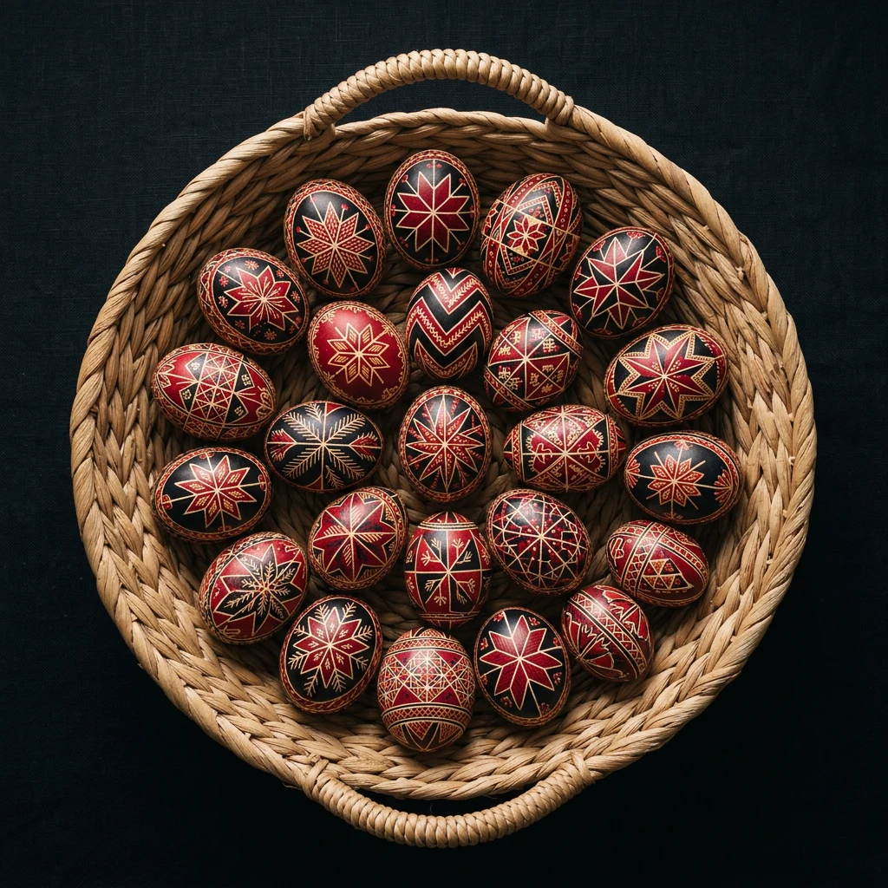
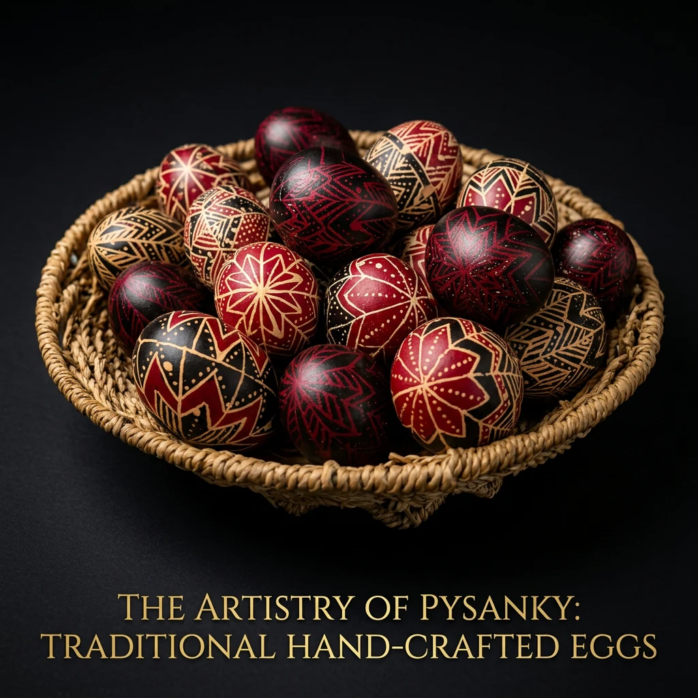
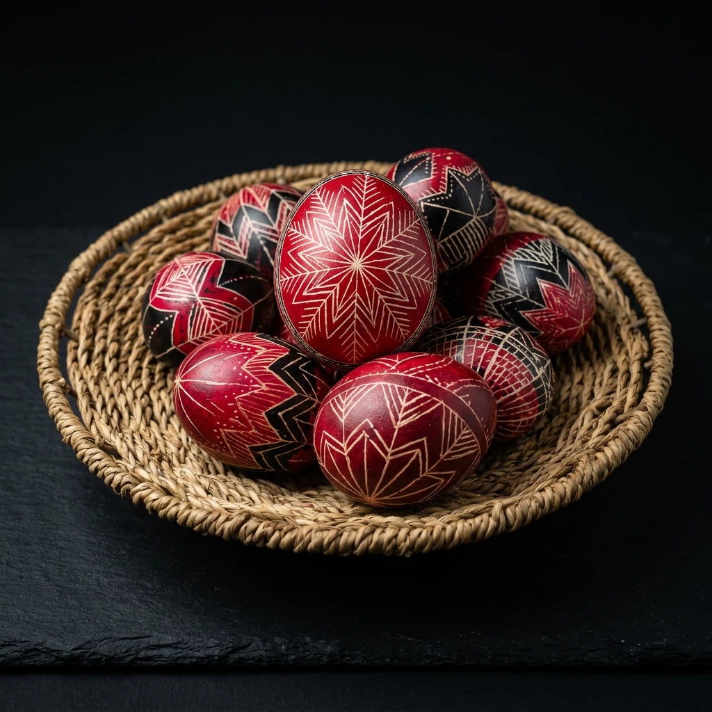
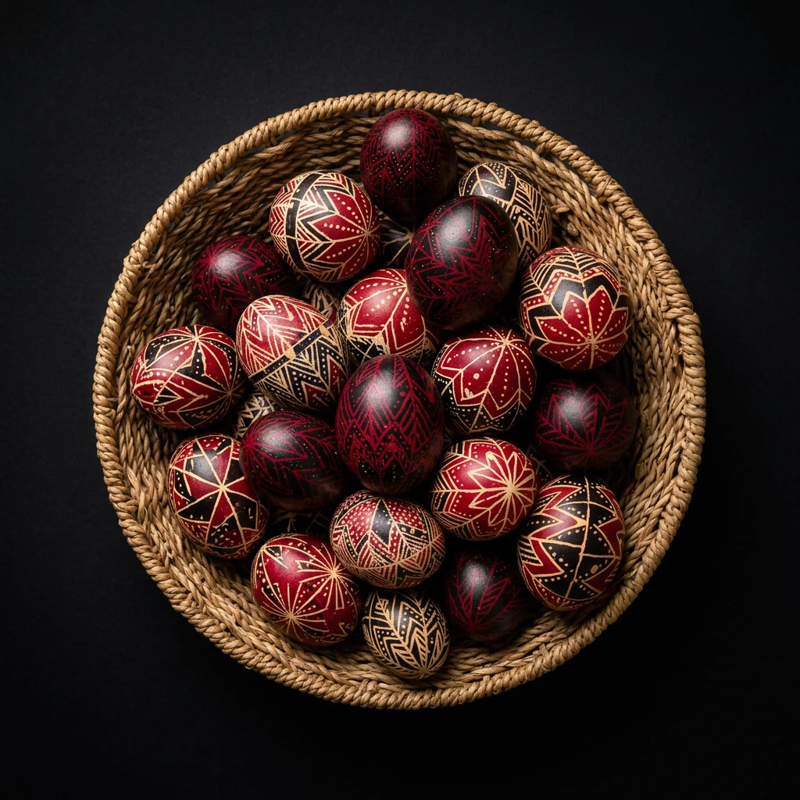

Hagyomány · Viasztechnika
Tojásdíszítés

Egy üres felület, egy kesice, egy csepp viasz – és lassan egy évszázados minta kel életre. A viasztechnikával végzett tojásdíszítés nem pusztán dekoráció – ez egy hagyomány, amelyet a saját kezemmel viszek tovább. Minden vonal egy döntés, minden minta egy történet – generációkon át ismétlődő, időkön át öröklődő formák.
Ez nem gyors munka: a viasz felvitele ugyanolyan türelmet igényel, mint a gyöngyszövés – sorról sorra, formáról formára. Az eredmény törékeny, mégis tartós: egy tárgy, amely magában hordozza azt a csendet és figyelmet, amelyből született.
← Vissza a főoldalraVálogatás
További tojásírásos munkák



